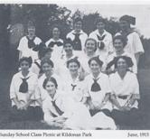

-1-MasterItem.svg)
Stories of Westminster United Church & its People / Page
49
cooperated, and were constantly exhorted to fulfill
their obligations to their children.
In our records, terms and numbers related to Christian Education
are sometimes confusing. However, for the record at one time we
were said to have 105 children and 12 teachers in our beginners’
department, 125 “scholars” and 14 teachers in the primary
department and 182 scholars in the upper school department
with 22 teachers. In 1918 our numbers were 650 with 79 teachers.
In 1924 our Sabbath School membership is reported at 900 members
with over 100 teachers. Whatever the numbers and to which age
groups they refer, to coordinate this enterprise we required a
Superintendent of Sunday School, a Director of Boys Department, a Director of
Girls Department
as well as other positions referred to elsewhere in the article.
If you haven’t yet conceptualized the scope and size of our Christian Eduction activity,
consider
the following bare facts about the annual June Sunday School picnic. The picnic
was held from
time to time in Selkirk, or at Grand Beach, or at Winnipeg Beach. In 1917 it was
held at Grand Beach
on June 19th. The C.N.R. supplied us with two trains that day, one leaving the
station at 8:30 am
and the other at 1:30 pm.
To organize the event a committee was appointed. The General committee had seven
members.
The Transportation Committee had ten members. There was a Games Committee of
five, and a
Refreshment Committee of nine. And, repeat, we needed two trains to handle the
attendance
numbered at over 500. The Congregation paid the transportation for the children.
Parents paid 25¢ each.
Table
of Contents

Scope of Sunday school activity